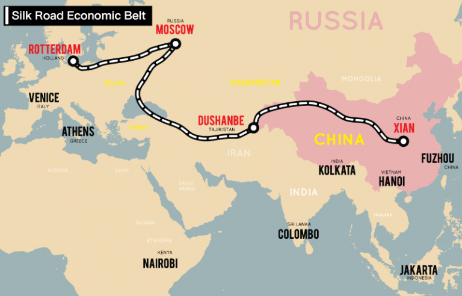
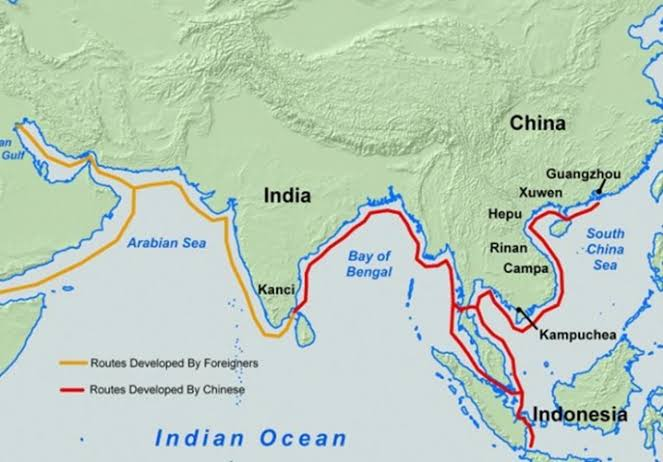

เส้นทางสายไหม บ้างเรียก เส้นทางแพรไหม (อังกฤษ: Silk Road หรือ Silk Route) เป็นชุดเส้นทางการส่งการค้าและวัฒนธรรมซึ่งเป็นศูนย์กลางของอันตรกิริยาทางวัฒนธรรมผ่านภูมิภาคของทวีปเอเชียที่เชื่อมตะวันตกและตะวันออกโดยการโยงพ่อค้าวาณิช ผู้แสวงบุญ นักบวช ทหาร ชนเร่ร่อนและผู้อาศัยในเมืองจากจีนและอินเดียไปยังทะเลเมดิเตอร์เรเนียนระหว่างเวลาหลายสมัย เครือข่ายเส้นทางการค้าโบราณที่เชื่อมต่อโลกตะวันออกและตะวันตกเข้าด้วยกัน ครอบคลุมระยะทางกว่า 6,400 กิโลเมตร เริ่มต้นตั้งแต่ศตวรรษที่ 2 ก่อนคริสต์ศักราช


เส้นทางสายไหมทางทะเล (Maritime Silk Road) เกิดขึ้นครั้งแรกในช่วง คริสต์ศตวรรษที่ 2 ก่อนคริสตกาล โดยมีจุดเริ่มต้นและพัฒนาการควบคู่กันจากหลายอารยธรรมในยุคโบราณ ซึ่งจุดเริ่มต้นที่สำคัญ แบ่งเป็น 2 ส่วนหลักๆ ดังนี้:ฝั่งเอเชีย (จีน): เริ่มต้นขึ้นอย่างเป็นทางการในสมัย ราชวงศ์ฮั่น (โดยเฉพาะยุคจักรวรรดิฮั่นอู่ตี้) โดยท่าเรือหลักที่ใช้เป็นจุดออกเดินทางตั้งอยู่บริเวณ มณฑลกวางตุ้ง (เมืองกว่างโจว) และ มณฑลกวางสี (เมืองเหอผู่ในปัจจุบัน)ฝั่งตะวันตกและอินเดีย: พัฒนาขึ้นโดย ชาวโรมัน และอาณาจักรในอินเดีย ซึ่งริเริ่มเส้นทางเดินเรือเชื่อมต่อระหว่าง ทะเลเมดิเตอร์เรเนียน ทะเลแดง และมหาสมุทรอินเดีย